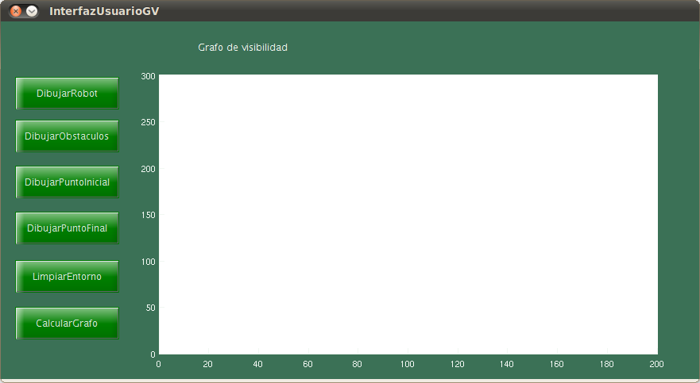

function varargout = InterfazUsuarioGVI(varargin)
gui_Singleton = 1;
gui_State = struct('gui_Name', mfilename, ...
'gui_Singleton', gui_Singleton, ...
'gui_OpeningFcn', @InterfazUsuarioGV_OpeningFcn, ...
'gui_OutputFcn', @InterfazUsuarioGV_OutputFcn, ...
'gui_LayoutFcn', [] , ...
'gui_Callback', []);
global coordenadasRobot;
if nargin && ischar(varargin{1})
gui_State.gui_Callback = str2func(varargin{1});
end
if nargout
[varargout{1:nargout}] = gui_mainfcn(gui_State, varargin{:});
else
gui_mainfcn(gui_State, varargin{:});
end
function InterfazUsuarioGV_OpeningFcn(hObject, eventdata, handles, varargin)
handles.output = hObject;
guidata(hObject, handles);
function varargout = InterfazUsuarioGV_OutputFcn(hObject, eventdata, handles)
varargout{1} = handles.output;
function coordenadasRobot=dibujaRobot(hObject, eventdata, handles)
hold on;
numeroDeVertices = 0;
coordenadasRobot= [];
while numeroDeVertices ~= 3
puntoEnPantalla = ginput(1);
coordenadasRobot = [coordenadasRobot, puntoEnPantalla'];
plot(coordenadasRobot(1,:),coordenadasRobot(2,:),'g');
numeroDeVertices = numeroDeVertices + 1;
end
dibujaRobotMapa(coordenadasRobot);
coordenadasRobot;
disp(coordenadasRobot);
function dibujaObstaculos(hObject, eventdata, handles)
hold on;
numeroObstaculos = 3;
contadorObstaculos = 0;
numeroAristas = 6;
contadorAristas = 0;
while (contadorObstaculos < numeroObstaculos)
contadorObstaculos = contadorObstaculos + 1;
obstaculos{contadorObstaculos} = [];
while (contadorAristas < numeroAristas)
puntoEnPantalla = ginput(1);
obstaculos{contadorObstaculos} = [obstaculos{contadorObstaculos}, puntoEnPantalla'];
plot(obstaculos{contadorObstaculos}(1,:),obstaculos{contadorObstaculos}(2,:),'k');
contadorAristas = contadorAristas + 1;
end
plot([obstaculos{contadorObstaculos}(1,1),obstaculos{contadorObstaculos}(1,end)],[obstaculos{contadorObstaculos}(2,1),obstaculos{contadorObstaculos}(2,end)],'k');
contadorAristas = 0;
end
dibujaObstaculo(obstaculos,numeroObstaculos,'r');
function dibujaPuntoFinal(hObject, eventdata, handles)
hold on;
puntoFinal = [];
puntoEnPantalla = ginput(1);
puntoFinal = [puntoFinal, puntoEnPantalla'];
plot(puntoFinal(1,:),puntoFinal(2,:),'ro');
function limpiaEntorno(hObject, eventdata, handles)
cla;
axis([0 200 -10 300]);
disp(coordenadasRobot);
function calculaGrafo(hObject, eventdata, handles)
function dibujaPuntoInicial(hObject, eventdata, handles)
hold on;
puntoInicial = [];
puntoEnPantalla = ginput(1);
puntoInicial = [puntoInicial, puntoEnPantalla'];
plot(puntoInicial(1,:),puntoInicial(2,:),'bo');
